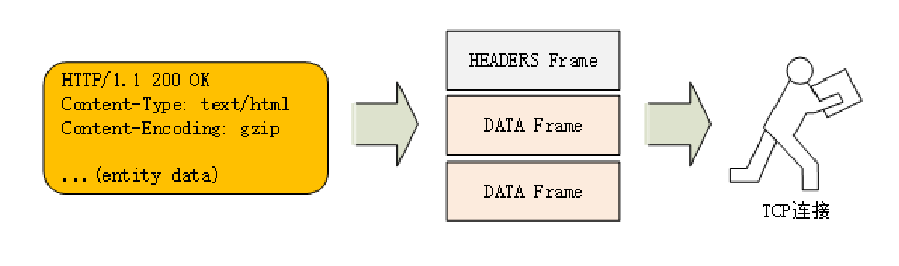
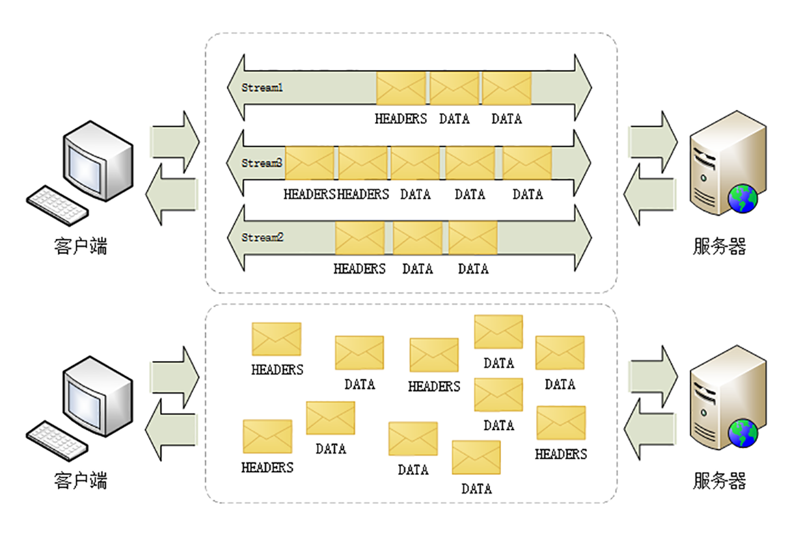
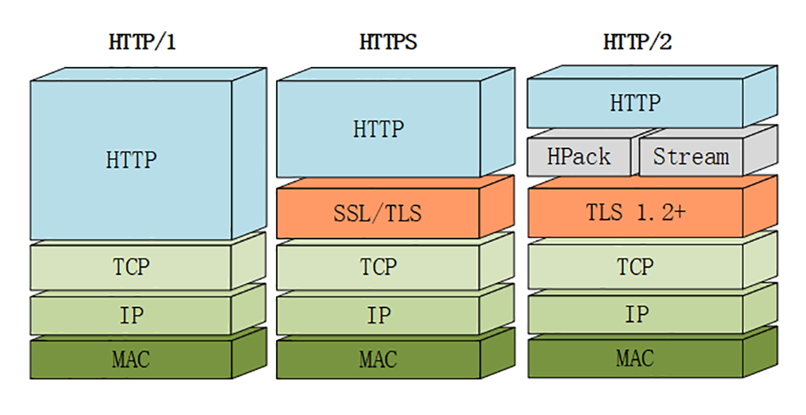
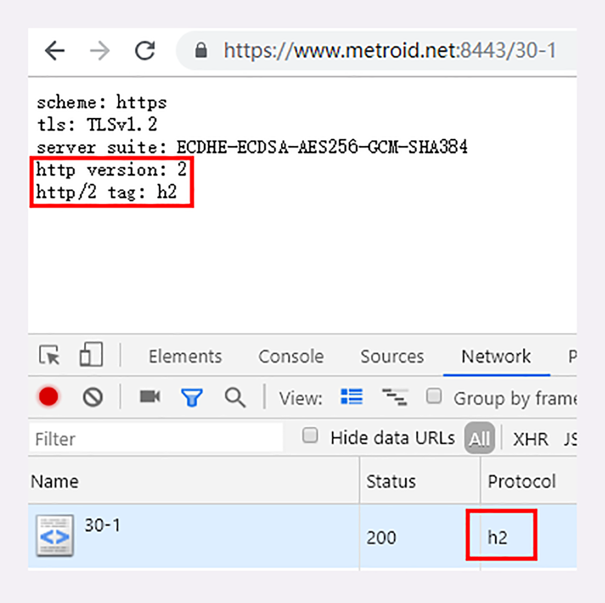
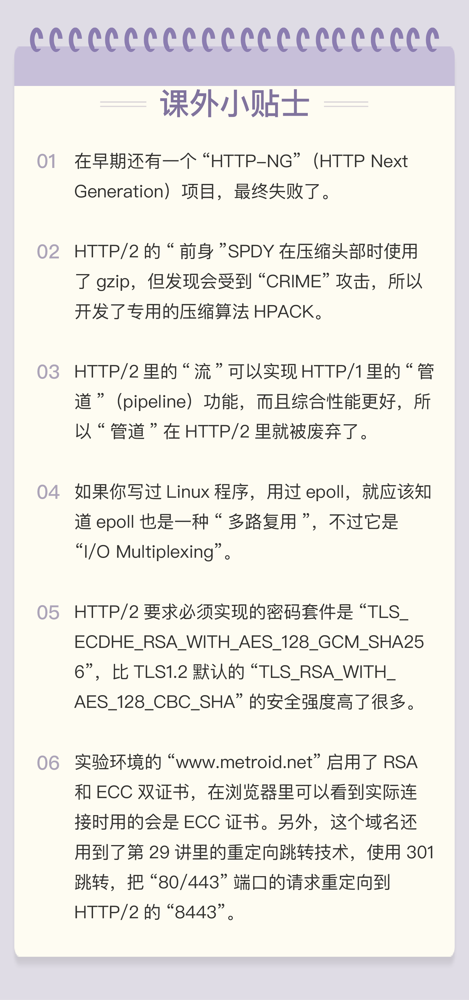

- 00 开篇词｜To Be a HTTP Hero.md.html
- 01 时势与英雄：HTTP的前世今生.md.html
- 02 HTTP是什么？HTTP又不是什么？.md.html
- 03 HTTP世界全览（上）：与HTTP相关的各种概念.md.html
- 04 HTTP世界全览（下）：与HTTP相关的各种协议.md.html
- 05 常说的“四层”和“七层”到底是什么？“五层”“六层”哪去了？.md.html
- 06 域名里有哪些门道？.md.html
- 07 自己动手，搭建HTTP实验环境.md.html
- 08 键入网址再按下回车，后面究竟发生了什么？.md.html
- 09 HTTP报文是什么样子的？.md.html
- 10 应该如何理解请求方法？.md.html
- 11 你能写出正确的网址吗？.md.html
- 12 响应状态码该怎么用？.md.html
- 13 HTTP有哪些特点？.md.html
- 14 HTTP有哪些优点？又有哪些缺点？.md.html
- 15 海纳百川：HTTP的实体数据.md.html
- 16 把大象装进冰箱：HTTP传输大文件的方法.md.html
- 17 排队也要讲效率：HTTP的连接管理.md.html
- 18 四通八达：HTTP的重定向和跳转.md.html
- 19 让我知道你是谁：HTTP的Cookie机制.md.html
- 20 生鲜速递：HTTP的缓存控制.md.html
- 21 良心中间商：HTTP的代理服务.md.html
- 22 冷链周转：HTTP的缓存代理.md.html
- 23 HTTPS是什么？SSLTLS又是什么？.md.html
- 24 固若金汤的根本（上）：对称加密与非对称加密.md.html
- 25 固若金汤的根本（下）：数字签名与证书.md.html
- 26 信任始于握手：TLS1.2连接过程解析.md.html
- 27 更好更快的握手：TLS1.3特性解析.md.html
- 28 连接太慢该怎么办：HTTPS的优化.md.html
- 29 我应该迁移到HTTPS吗？.md.html
- 30 时代之风（上）：HTTP2特性概览.md.html
- 31 时代之风（下）：HTTP2内核剖析.md.html
- 32 未来之路：HTTP3展望.md.html
- 33 我应该迁移到HTTP2吗？.md.html
- 34 Nginx：高性能的Web服务器.md.html
- 35 OpenResty：更灵活的Web服务器.md.html
- 36 WAF：保护我们的网络服务.md.html
- 37 CDN：加速我们的网络服务.md.html
- 38 WebSocket：沙盒里的TCP.md.html
- 39 HTTP性能优化面面观（上）.md.html
- 40 HTTP性能优化面面观（下）.md.html
- 结束语 做兴趣使然的Hero.md.html
30 时代之风（上）：HTTP2特性概览
在[第 14 讲]里，我们看到 HTTP 有两个主要的缺点：安全不足和性能不高。
刚结束的“安全篇”里的 HTTPS，通过引入 SSL/TLS 在安全上达到了“极致”，但在性能提升方面却是乏善可陈，只优化了握手加密的环节，对于整体的数据传输没有提出更好的改进方案，还只能依赖于“长连接”这种“落后”的技术（参见[第 17 讲]）。
所以，在 HTTPS 逐渐成熟之后，HTTP 就向着性能方面开始“发力”，走出了另一条进化的道路。
在[第 1 讲]的 HTTP 历史中你也看到了，“秦失其鹿，天下共逐之”，Google 率先发明了 SPDY 协议，并应用于自家的浏览器 Chrome，打响了 HTTP 性能优化的“第一枪”。
随后互联网标准化组织 IETF 以 SPDY 为基础，综合其他多方的意见，终于推出了 HTTP/1 的继任者，也就是今天的主角“HTTP/2”，在性能方面有了一个大的飞跃。
为什么不是 HTTP/2.0
你一定很想知道，为什么 HTTP/2 不像之前的“1.0”“1.1”那样叫“2.0”呢？
这个也是很多初次接触 HTTP/2 的人问的最多的一个问题，对此 HTTP/2 工作组特别给出了解释。
他们认为以前的“1.0”“1.1”造成了很多的混乱和误解，让人在实际的使用中难以区分差异，所以就决定 HTTP 协议不再使用小版本号（minor version），只使用大版本号（major version），从今往后 HTTP 协议不会出现 HTTP/2.0、2.1，只会有“HTTP/2”“HTTP/3”……
这样就可以明确无误地辨别出协议版本的“跃进程度”，让协议在一段较长的时期内保持稳定，每当发布新版本的 HTTP 协议都会有本质的不同，绝不会有“零敲碎打”的小改良。
兼容 HTTP/1
由于 HTTPS 已经在安全方面做的非常好了，所以 HTTP/2 的唯一目标就是改进性能。
但它不仅背负着众多的期待，同时还背负着 HTTP/1 庞大的历史包袱，所以协议的修改必须小心谨慎，兼容性是首要考虑的目标，否则就会破坏互联网上无数现有的资产，这方面 TLS 已经有了先例（为了兼容 TLS1.2 不得不进行“伪装”）。
那么，HTTP/2 是怎么做的呢？
因为必须要保持功能上的兼容，所以 HTTP/2 把 HTTP 分解成了“语义”和“语法”两个部分，“语义”层不做改动，与 HTTP/1 完全一致（即 RFC7231）。比如请求方法、URI、状态码、头字段等概念都保留不变，这样就消除了再学习的成本，基于 HTTP 的上层应用也不需要做任何修改，可以无缝转换到 HTTP/2。
特别要说的是，与 HTTPS 不同，HTTP/2 没有在 URI 里引入新的协议名，仍然用“http”表示明文协议，用“https”表示加密协议。
这是一个非常了不起的决定，可以让浏览器或者服务器去自动升级或降级协议，免去了选择的麻烦，让用户在上网的时候都意识不到协议的切换，实现平滑过渡。
在“语义”保持稳定之后，HTTP/2 在“语法”层做了“天翻地覆”的改造，完全变更了 HTTP 报文的传输格式。
头部压缩
首先，HTTP/2 对报文的头部做了一个“大手术”。
通过“进阶篇”的学习你应该知道，HTTP/1 里可以用头字段“Content-Encoding”指定 Body 的编码方式，比如用 gzip 压缩来节约带宽，但报文的另一个组成部分——Header 却被无视了，没有针对它的优化手段。
由于报文 Header 一般会携带“User Agent”“Cookie”“Accept”“Server”等许多固定的头字段，多达几百字节甚至上千字节，但 Body 却经常只有几十字节（比如 GET 请求、204/301/304 响应），成了不折不扣的“大头儿子”。更要命的是，成千上万的请求响应报文里有很多字段值都是重复的，非常浪费，“长尾效应”导致大量带宽消耗在了这些冗余度极高的数据上。
所以，HTTP/2 把“头部压缩”作为性能改进的一个重点，优化的方式你也肯定能想到，还是“压缩”。
不过 HTTP/2 并没有使用传统的压缩算法，而是开发了专门的“HPACK”算法，在客户端和服务器两端建立“字典”，用索引号表示重复的字符串，还釆用哈夫曼编码来压缩整数和字符串，可以达到 50%~90% 的高压缩率。
二进制格式
你可能已经很习惯于 HTTP/1 里纯文本形式的报文了，它的优点是“一目了然”，用最简单的工具就可以开发调试，非常方便。
但 HTTP/2 在这方面没有“妥协”，决定改变延续了十多年的现状，不再使用肉眼可见的 ASCII 码，而是向下层的 TCP/IP 协议“靠拢”，全面采用二进制格式。
这样虽然对人不友好，但却大大方便了计算机的解析。原来使用纯文本的时候容易出现多义性，比如大小写、空白字符、回车换行、多字少字等等，程序在处理时必须用复杂的状态机，效率低，还麻烦。
而二进制里只有“0”和“1”，可以严格规定字段大小、顺序、标志位等格式，“对就是对，错就是错”，解析起来没有歧义，实现简单，而且体积小、速度快，做到“内部提效”。
以二进制格式为基础，HTTP/2 就开始了“大刀阔斧”的改革。
它把 TCP 协议的部分特性挪到了应用层，把原来的“Header+Body”的消息“打散”为数个小片的二进制“帧”（Frame），用“HEADERS”帧存放头数据、“DATA”帧存放实体数据。
这种做法有点像是“Chunked”分块编码的方式（参见[第 16 讲]），也是“化整为零”的思路，但 HTTP/2 数据分帧后“Header+Body”的报文结构就完全消失了，协议看到的只是一个个的“碎片”。

虚拟的“流”
消息的“碎片”到达目的地后应该怎么组装起来呢？
HTTP/2 为此定义了一个“流”（Stream）的概念，它是二进制帧的双向传输序列，同一个消息往返的帧会分配一个唯一的流 ID。你可以想象把它成是一个虚拟的“数据流”，在里面流动的是一串有先后顺序的数据帧，这些数据帧按照次序组装起来就是 HTTP/1 里的请求报文和响应报文。
因为“流”是虚拟的，实际上并不存在，所以 HTTP/2 就可以在一个 TCP 连接上用“流”同时发送多个“碎片化”的消息，这就是常说的“多路复用”（ Multiplexing）——多个往返通信都复用一个连接来处理。
在“流”的层面上看，消息是一些有序的“帧”序列，而在“连接”的层面上看，消息却是乱序收发的“帧”。多个请求 / 响应之间没有了顺序关系，不需要排队等待，也就不会再出现“队头阻塞”问题，降低了延迟，大幅度提高了连接的利用率。

为了更好地利用连接，加大吞吐量，HTTP/2 还添加了一些控制帧来管理虚拟的“流”，实现了优先级和流量控制，这些特性也和 TCP 协议非常相似。
HTTP/2 还在一定程度上改变了传统的“请求 - 应答”工作模式，服务器不再是完全被动地响应请求，也可以新建“流”主动向客户端发送消息。比如，在浏览器刚请求 HTML 的时候就提前把可能会用到的 JS、CSS 文件发给客户端，减少等待的延迟，这被称为“服务器推送”（Server Push，也叫 Cache Push）。
强化安全
出于兼容的考虑，HTTP/2 延续了 HTTP/1 的“明文”特点，可以像以前一样使用明文传输数据，不强制使用加密通信，不过格式还是二进制，只是不需要解密。
但由于 HTTPS 已经是大势所趋，而且主流的浏览器 Chrome、Firefox 等都公开宣布只支持加密的 HTTP/2，所以“事实上”的 HTTP/2 是加密的。也就是说，互联网上通常所能见到的 HTTP/2 都是使用“https”协议名，跑在 TLS 上面。
为了区分“加密”和“明文”这两个不同的版本，HTTP/2 协议定义了两个字符串标识符：“h2”表示加密的 HTTP/2，“h2c”表示明文的 HTTP/2，多出的那个字母“c”的意思是“clear text”。
在 HTTP/2 标准制定的时候（2015 年）已经发现了很多 SSL/TLS 的弱点，而新的 TLS1.3 还未发布，所以加密版本的 HTTP/2 在安全方面做了强化，要求下层的通信协议必须是 TLS1.2 以上，还要支持前向安全和 SNI，并且把几百个弱密码套件列入了“黑名单”，比如 DES、RC4、CBC、SHA-1 都不能在 HTTP/2 里使用，相当于底层用的是“TLS1.25”。
协议栈
下面的这张图对比了 HTTP/1、HTTPS 和 HTTP/2 的协议栈，你可以清晰地看到，HTTP/2 是建立在“HPack”“Stream”“TLS1.2”基础之上的，比 HTTP/1、HTTPS 复杂了一些。

虽然 HTTP/2 的底层实现很复杂，但它的“语义”还是简单的 HTTP/1，之前学习的知识不会过时，仍然能够用得上。
我们的实验环境在新的域名“www.metroid.net”上启用了 HTTP/2 协议，你可以把之前“进阶篇”“安全篇”的测试用例都走一遍，再用 Wireshark 抓一下包，实际看看 HTTP/2 的效果和对老协议的兼容性（例如“http://www.metroid.net/11-1”）。
在今天这节课专用的 URI“/30-1”里，你还可以看到服务器输出了 HTTP 的版本号“2”和标识符“h2”，表示这是加密的 HTTP/2，如果改用“https://www.chrono.com/30-1”访问就会是“1.1”和空。

你可能还会注意到 URI 里的一个小变化，端口使用的是“8443”而不是“443”。这是因为 443 端口已经被“www.chrono.com”的 HTTPS 协议占用，Nginx 不允许在同一个端口上根据域名选择性开启 HTTP/2，所以就不得不改用了“8443”。
小结
今天我简略介绍了 HTTP/2 的一些重要特性，比较偏重理论，下一次我会用 Wireshark 抓包，具体讲解 HTTP/2 的头部压缩、二进制帧和流等特性。
- HTTP 协议取消了小版本号，所以 HTTP/2 的正式名字不是 2.0；
- HTTP/2 在“语义”上兼容 HTTP/1，保留了请求方法、URI 等传统概念；
- HTTP/2 使用“HPACK”算法压缩头部信息，消除冗余数据节约带宽；
- HTTP/2 的消息不再是“Header+Body”的形式，而是分散为多个二进制“帧”；
- HTTP/2 使用虚拟的“流”传输消息，解决了困扰多年的“队头阻塞”问题，同时实现了“多路复用”，提高连接的利用率；
- HTTP/2 也增强了安全性，要求至少是 TLS1.2，而且禁用了很多不安全的密码套件。
课下作业
- 你觉得明文形式的 HTTP/2（h2c）有什么好处，应该如何使用呢？
- 你觉得应该怎样理解 HTTP/2 里的“流”，为什么它是“虚拟”的？
- 你能对比一下 HTTP/2 与 HTTP/1、HTTPS 的相同点和不同点吗？
欢迎你把自己的学习体会写在留言区，与我和其他同学一起讨论。如果你觉得有所收获，也欢迎把文章分享给你的朋友。
